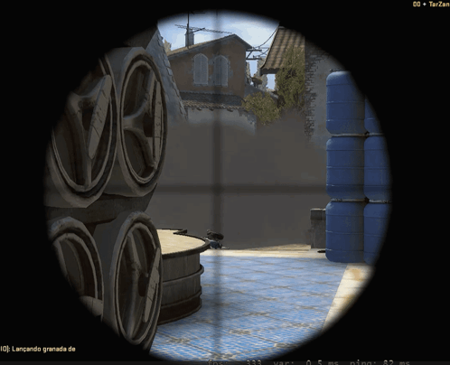

Counter-Strike 2, conhecido também como CS2 é um jogo tático multijogador de tiro em primeira pessoa anunciado 22 de março de 2023 e lançado em 27 de setembro de 2023. Desenvolvido e publicado pela Valve. É o quinto jogo da série principal Counter-Strike.
Assim como o Global Offensive, o jogo é composto por duas equipes, os Contra-Terroristas e os Terroristas, uma contra a outra em vários modos de jogo baseados em objetivos específicos dependendo do modo de jogo.
Counter-Strike 2 trás várias melhorias em relação ao seu antecessor, incluindo uma mudança do motor de jogo Source para Source 2, gráficos aprimorados e uma nova arquitetura de servidor "sub-tick".
Jogabilidade
Os jogadores são divididos em duas equipes, os Contra-Terroristas(CTs) e os Terroristas(TRs), cada equipe tem seus próprios objetivos dependendo do modo selecionado.
A maioria dos modos de jogo dura várias rodadas; entre as rodadas, os jogadores podem comprar diferentes armas e equipamentos para usar. Na maioria dos modos de jogo, os jogadores têm uma única vida por rodada e, se morrerem, não poderão jogar até o início da próxima rodada.

Demonstrativo da jogabilidade de Counter Strike 2, onde um terrorista de rifle de precisão consegue eliminar o seu oponente
Recepção
Crítica
De acordo com o agregador de análises Metacritic, Counter-Strike 2 recebeu "avaliações geralmente favoráveis" dos críticos, com base em 16 análises críticas. No agregador de análises OpenCritic, o jogo recebeu uma pontuação média de 80, com 88% dos críticos recomendando-o no geral.
Jake Tucker do TechRadar deu ao Counter-Strike 2 uma classificação de 4 de 5 estrelas, resumindo com: "A parede de barulho e violência ' Counter-Strike 2 parecerá impenetrável para os novatos, mas uma atualização bem-vinda para os fãs de longa data do Counter-Strike. É o melhor jogo de tiro competitivo do mercado, mas é tão difícil para novos jogadores embarcarem que não será para todos." Chris Shive da Hardcore Gamer deu ao jogo uma classificação de 4/5, afirmando que Counter-Strike 2 é uma "atualização principalmente positiva para Global Offensive ".
Charlie Theel ' da Polygon, chamou Counter-Strike 2 de "um avanço significativo para a franquia", elogiando as mudanças do jogo no manuseio de armas, visuais, design de som e direção de arte. Ed Thorn, editor de resenhas da Rock Paper Shotgun, afirmou que Counter-Strike 2 "captura o que faz o Counter-Strike funcionar", embora tenha notado que a base do jogo parecia "um pouco esparsa e um pouco instável" em seu lançamento inicial, mas se sentiu confiante que a Valve “tem um FPS que substituirá a Ofensiva Global com o tempo”.
Tabela referente as cirticas do lançamento do jogo
Resenha Crítica
Publicação
Nota
Edge
9/10
Eurogamer
4/5
GameStar
85%
Hardcore
4/5
Jeuxvideo
15/20
Pontuação global
Agregador
Nota Média
Metacritic
82/100
Jogadores
As recepções iniciais dos jogadores foram sobre a remoção do Global Offensive da Steam, a remoção de vários modos de jogo que estavam presentes no Global Offensive, como Corrida Armada e Danger Zone, e a descontinuação do suporte ao sistema operacional macOS. Devido ao conteúdo removido, o jogo recebeu milhares de críticas negativas na Steam, a maioria delas escondidas pelas 7,5 milhões de críticas feitas anteriormente para Global Offensive, a maioria delas positivas. Graham Smith da Rock Paper Shotgun comentou que Counter-Strike 2 não deveria ter sido capaz de usar análises da Global Offensive para se sustentar, já que os dois eram jogos diferentes, e que se as análises dos usuários incluíssem apenas aquelas de Counter-Strike 2, a loja página mostraria um feedback misto dos jogadores equivalente a 59%
Video do yotube que mostra trailer do jogo counter strike 2